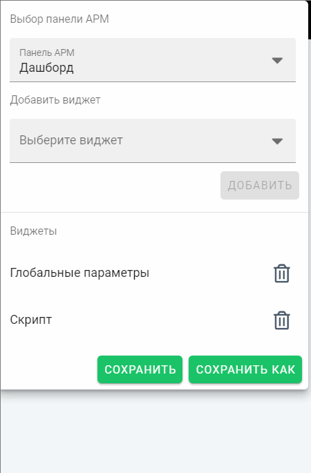
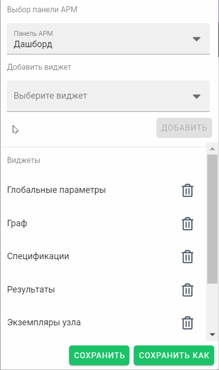
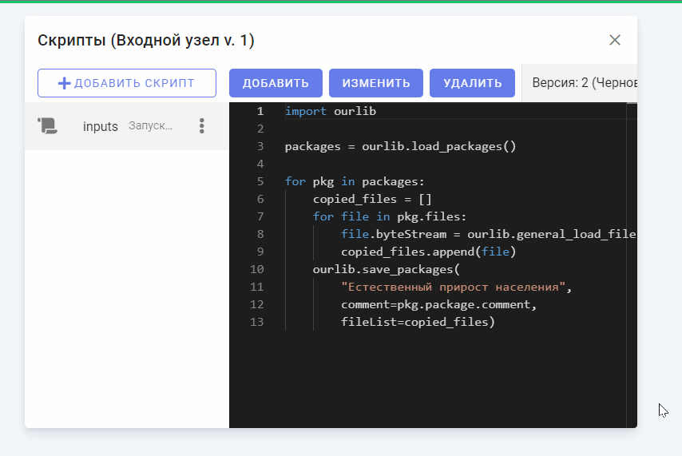
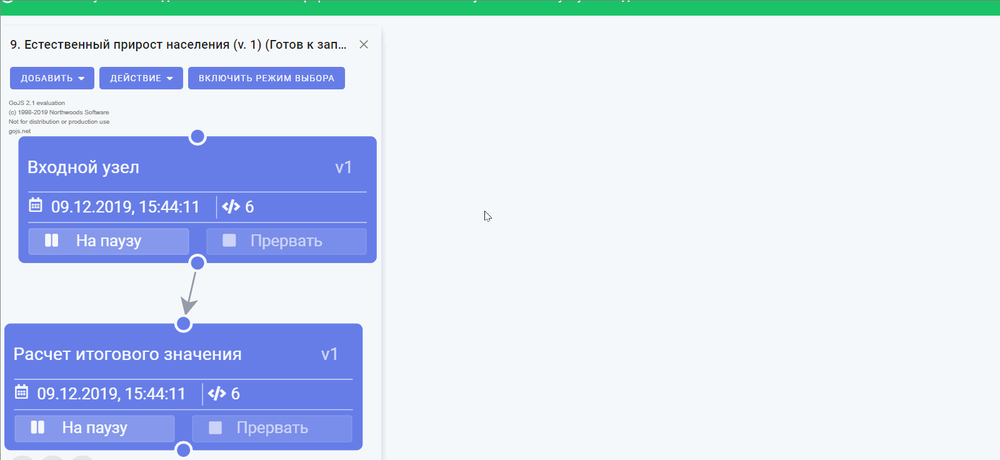
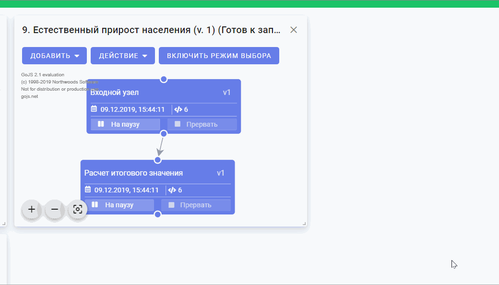

Виджет - это элемент графического интерфейса пользователя, предназначенный для отображения информации либо выполнения какой-либо функции. При запуске модели либо ее эпизода открывается панель виджетов. Изначальное расположение виджетов соответствует выбранной при открытии модели панели АРМ.
В системе предусмотрены следующие виджеты:
Возможные действия по управлению виджетами на панели:
Для того, чтобы добавить новый виджет на панель виджетов, необходимо нажать на меню "Настройки" в верхней области панели. В выпадающем списке "Выберите виджет" необходимо нажать на название нужного виджета, затем нажать на кнопку "Добавить". Выбранный виджет появится в верхней левой области панели виджетов.

Для того, чтобы просмотреть список всех доступных виджетов, необходимо нажать на меню "Настройки" в верхней области панели. После этого откроется список всех расположенных виджетов на панели.
Для того, чтобы удалить с панели виджетов какой-либо виджет, необходимо:


После добавления виджета можно изменять его положение и размер.
Для изменения положения виджета необходимо переместить курсор в верхнюю часть виджета. При наведении на верхнюю часть виджета курсор изменит вид. Далее необходимо зажать левую кнопку мыши и переместить виджет в нужную область панели виджетов.

Для изменения размера виджета необходимо переместить курсор в правый нижний угол виджета. При наведении на нижнюю левую часть виджета курсор изменит вид. Необходимо зажать левую кнопку мыши и, потянув за угол виджета, изменить его размер.
